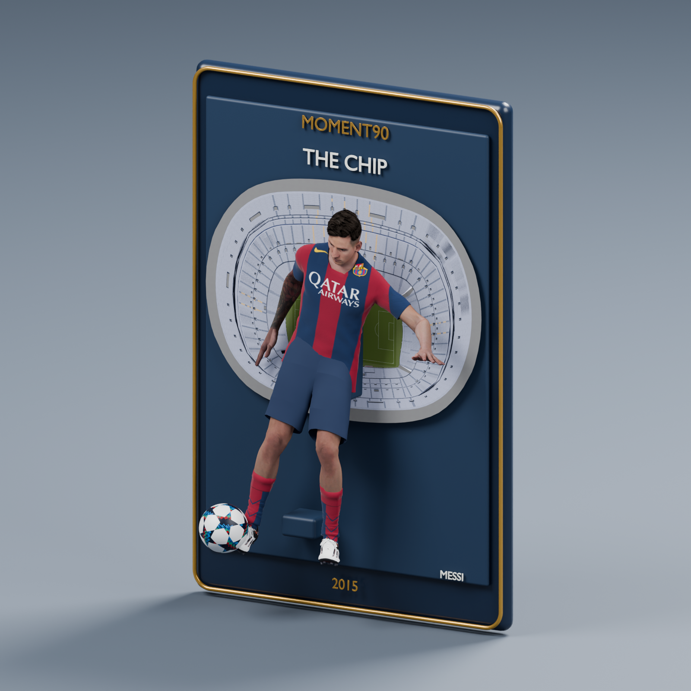
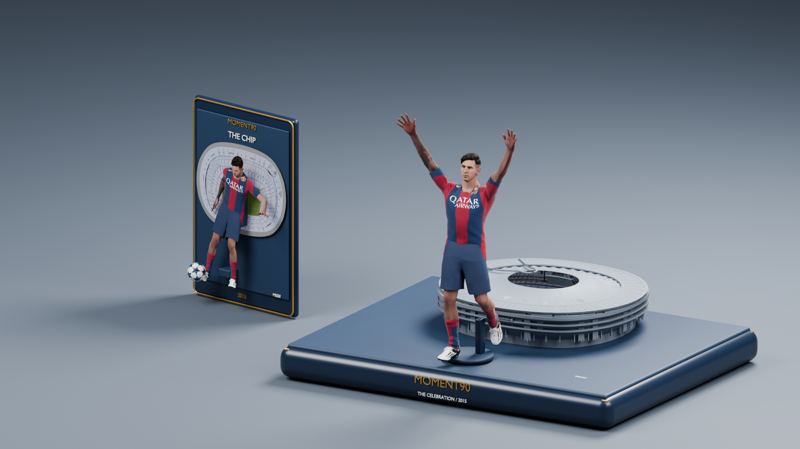

真实比赛参考
射门瞬间拖动进度条，选择你的瞬间
原比赛片段 · 来源信息见页面下方
梅西 × 诺坎普 · 产品数字样稿
一脚挑射，一次举臂。
从赛场影像，变成有深度的收藏。
THE CHIP / 立体球星卡
人物、足球与看台分层呈现。从正面看一瞬间，从侧面看它的深度。

THE MOMENT, AGAIN
同一个瞬间，两种观看方式。
左侧是比赛影像，右侧是三维游戏渲染。
仅在当前浏览器读取，选好画面后保存定格参考。
原比赛片段 · 来源信息见页面下方
参考动作复原 · 尚非写实或 4DGS 成片
切换顶部瞬间，同时切换收藏品与关联回放。完整片段另页打开，保留进球前后的比赛情境。

球星卡 × 场景摆件ONE MOMENT. TWO WAYS TO KEEP IT.
卡片留下人物与看台的层次，桌面摆件把庆祝瞬间放进微缩诺坎普。英雄比例让人物成为主角，球场保留记忆里的空间。
当前展示的是可旋转数字样稿。球场取自新诺坎普游戏模组，并非2015年建筑的精确复原。厚度、支撑、装配和上色仍需实物打样验证。
制作与打样说明 ↗TOUCH THE MOMENT
将手机靠近底座的 NFC 标签，或扫描卡背二维码，打开与这件收藏品关联的瞬间。无需安装专属 App。
NFC 标签需要先写入体验网址，再进行真机触碰测试；此页不代表芯片已写入或实物已验证。
YOUR TURN
选择方向、弧度和力度，看球能否进入球门。
轻量互动原型 · 不是真实比赛模拟器
拖动场内落点，或使用下方控制。
金色虚线预示当前参数下的轨迹。方向、弧度和力度都会改变球路；得分由球穿过门线的位置决定。
THE NEXT CHAPTER
下一阶段探索 4DGS 多视角瞬间与更完整的球场互动。当前已能看回放、旋转数字收藏品和体验射门原型；尚未实现可自由走动的真实比赛重建。
4DGS · 待采集与验证实物 NFC · 待写入与真机验证